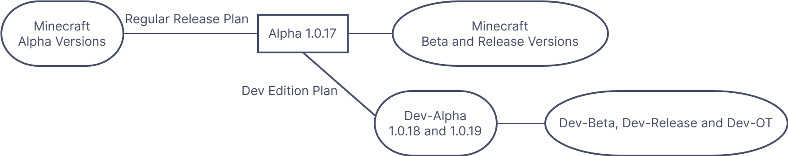

- Minecraft Dev Edition
Unofficial Site -
MAIN PAGE
The origin of this
edition
In the Alpha versions
of Minecraft, Mojang started a new project called Dev Edition to test new
features and try to move towards other game types. The edition production
continued until Microsoft acquired Mojang. After Microsoft acquired Mojang,
Microsoft decided to cancel it. Some of the employees who involved the project
left, but at the request of other employees, Microsoft agreed to keep the
project, but no longer provided financial support. Therefore, several employees
sold these versions on the website, and they may have added with viruses and
other terrifying things...
Discovered version
Dev-Alpha 1.0.18_01
Special Test (No virus)
The flowchart
